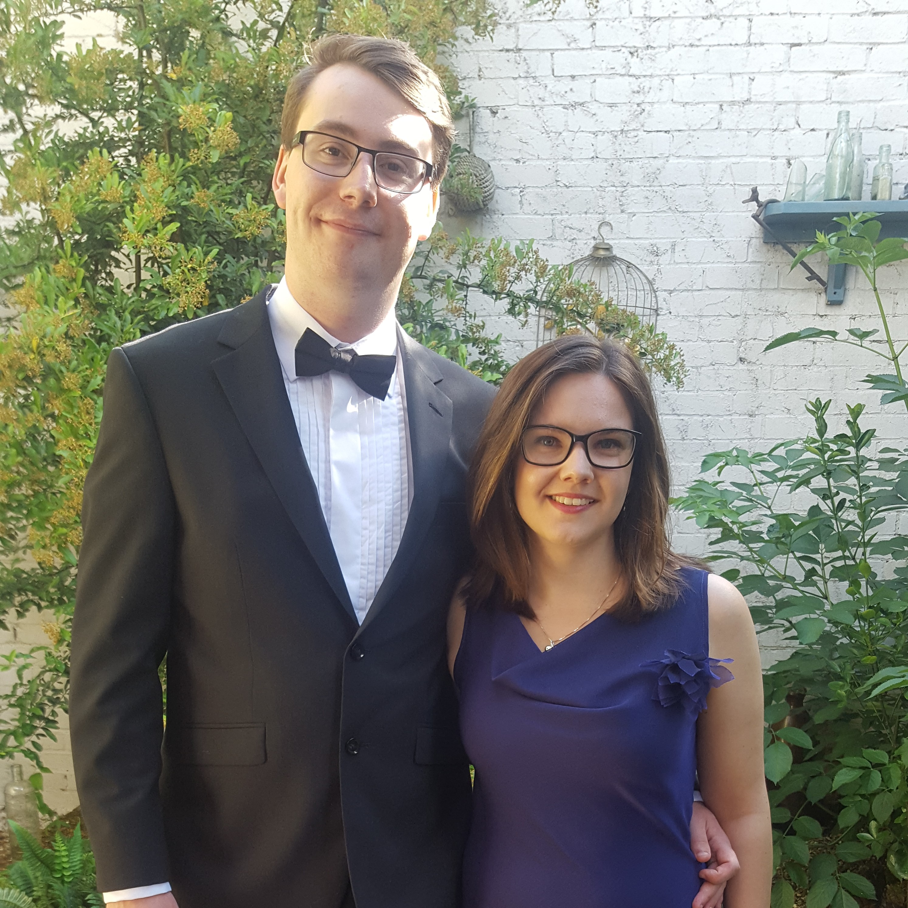

Marcus Greenwood
Software Engineer
I am a highly motivated, ambitious individual interested in advancing my career in software development. I
welcome
responsibility and enthusiastically seek out new challenges to exercise strengths that I already possess and
to
develop new ones.
Skills
Programming and Computer Skills
-
Expert in C++, JavaScript, Python and Git: Used daily in my career at Autodesk for application
development.
- Proficient in C#, HTML and PHP: Used for web and game development as a hobby.
-
Highly competent in MATLAB and Java: Used to create image compression algorithms and solve complex
mathematical
problems at university.
Problem Solving and Data Analytics
- Ability to solve complex problems in applied mathematics and computer science.
-
Experience with applying sophisticated data analytical techniques on large sets of confidential
information,
often
containing several million data points.
Presentation and Communication Skills
-
Excellent communication skills and the ability to work effectively in a software development scrum team.
-
Confident in presenting completed work during sprint reviews and spike results in a structured format to
the
Product Owner and Product Manager.
Collaboration and Leadership
-
Effective leadership of a team in the International Student Robotics Competition 2014 organizing the
project
over
several months, building and coding of a complex autonomous robot.
Employment History
Autodesk Inc - Software Engineer September 2018 - Present
-
Successfully reimplemented a machining process of polar linearization from Java Script into C++.
-
Implemented a complete QT based dialogue for the management of machines following the model/view
architecture.
-
Improved the application programming interface of Fusion360 and designed a Python-based add-in for
creating an
internal representation of machines.
-
Delivered detailed tours of the manufacturing and creative workspace to potential and existing
customers.
-
Greatly enhanced the manufacturing website by facilitating the download of previous posts for Fusion360,
which
were previously unobtainable.
Warwick Manufacturing Group - Research Intern Summer 2017
-
Successfully created several MATLAB functions to generate equations that modelled capacity loss
depending on
multiple factors.
-
Performed several data analytics techniques on 150GB of battery capacity data to find the relationship
between
capacity degradation and charge cycles.
-
Submitted a four-page LaTex written report of the work achieved, which will be included in a formal
scientific
publication.
Metflex Precision Mouldings LTD - Operator Summer 2016
-
Operated heavy machinery to precisely cut blanks of rubber, minimizing offcuts at all times and tracking
the
quantities that needed to be cut.
-
Operated a heat stabilization oven that required me to load and unload continuously, whilst inspecting
and
packing
the diaphragms carefully. This required a high level of organization and time management.
Tesco PLC - Dot Com Personal Shopper October 2012 - December 2015
-
Worked within a fast-paced, customer-facing team to acquire shopping and pack for customers
-
Collaborated with other in-store areas during business-critical trading periods to deliver for
customers.
-
Prioritized customers and responded empathetically to their queries, meanwhile maintaining service
targets.
-
Regularly exceeded objectives; this was recognised at my 6-month performance review.
Received the ‘Going above and beyond’ award for helping customers during the busy Christmas period.
Education
University of Warwick 2014 - 2018
- MSc (Hons) Computer Science [Distinction]
- BSc (Hons) Mathematics [2:2]
Runshaw College, Preston 2012 – 2014
- A levels: Further Mathematics [A*], Mathematics [A*], Physics [A*], Chemistry [A*]
- STEP I, II, III [1, 3, 2]
St. Wilfrid’s Academy, Blackburn 2007 – 2012
- 10 GCSE’s [A* - C]
- Advanced Mathematics Qualification [A]
Achievements
Duke of Edinburgh Bronze Award.
Top 4% in the National Cipher Challenge.
3rd place in the 2014 International Student Robotics Competition.
Interests
Playing and watching sports including rugby, football, running and swimming.
Video, role-playing and board games.
Computer hardware and video game design.
Contact Information
marcus_greenwood@hotmail.co.uk
+447805013907
11 Churchill Avenue,
Kenilworth,
Warwickshire,
CV8 2ND,
United Kingdom